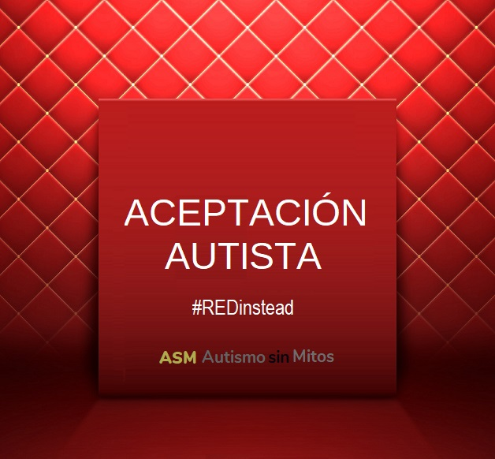
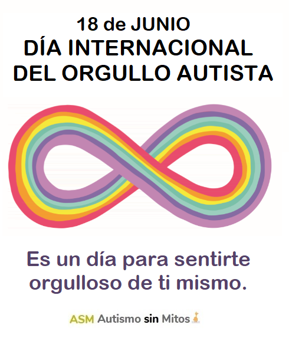
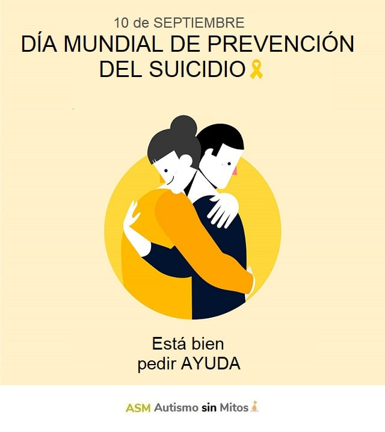

2 DE ABRIL
ACEPTACIÓN del autismo
Es momento de divulgar no sólo acerca de qué es el autismo, sino también dar un paso más, lograr que las personas vean que los adultos autistas existimos, que NO es sólo un asunto infantil, y que las dificultades no son por ser autista en sí, sino porque la sociedad no tiene en cuenta los modos distintos de pensar y sentir de una persona autista.
18 DE JUNIO
Para sentirte orgulloso de tí mismo
El Día del Orgullo Autista, es un día que se celebra en todo el mundo el 18 de junio con el único propósito de crear conciencia entre el público de que las personas autistas no son una versión rota de sí mismas, sino que son individuos únicos. El evento anual fue celebrado por primera vez por Aspies for Freedom en 2005, y no está dirigido por organizaciones benéficas, sino por personas autistas. Está representado por un símbolo de infinito del arco iris que significa diversidad de personas autistas y las infinitas posibilidades y variaciones dentro de la comunidad autista. Las personas autistas tienen características únicas, y muchas de las dificultades que enfrentan se deben a la falta de tolerancia o aceptación de su neurodiversidad. La sociedad, sin embargo, responde muchas veces con lástima o menosprecio con la creencia de que es una condición que requiere cura. A pesar de los desafíos y/o dificultades que enfrentemos, el propósito del Día del Orgullo Autista es mostrarle al mundo que estamos orgullosos de ser autistas, que no estamos enfermos ni defectuosos, que no necesitamos que nos normalicen.
10 DE SEPTIEMBRE
Día mundial de prevención del suicidio
Las personas autistas tienen un mayor riesgo de suicidio que las personas no autistas. Las cifras muestran que entre el 11 y el 66% de los adultos autistas habían pensado en el suicidio durante su vida, y hasta el 35% había planeado o intentado suicidarse (Hedley, D. y Uljarević, M. 2018). Está bien pedir ayuda 🤝
En Argentina:-
Llama al 👉 135 (línea gratuita desde Capital y Gran Buenos Aires)
-
👉 (011) 5275-1135
-
👉 0800 345 1435 (desde todo el país)
-
Tu llamado es personal, confidencial y anónimo.